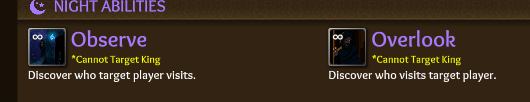

I’m going to strongly disagree that the Observer nerf was not high priority
4 Likes
For me, Noble meta and Pretender meta were really annoying
Noble meta confirmed a lot of classes which shouldn’t be that much confirmable, easily and in the early game
Pretender meta was “D1 Pretender, make me king” and waiting until BD either kills you or votes you to king.
Observer was just the strongest Invest class, so strong, that we had the “Guide claiming Obs” meme, aka Observer was so hard to fake claim that mostly Guides did that challenge
Btw, I like the new names more 

I think my new Obs logs will look this way:
Observer!
n1. Observe 10 | 10 > 1
n2. Overlook 16 | 2,5 > 16
In general calling an ability “obs” on a class called “obs” is just asking for confusion imo
2 Likes
Follow and Stake Out
Follow still exists on Nightwatch - can’t do that one.
Watch isn’t bad
1 Like
Trail, Witness, Window Peek ect
1 Like
Creeper, Stalker, Peeper 
3 Likes
No thanks lmao
For Survey, Scope or Window Peek could work. For Distant Follow Stalk could work, but that might be a bit evil-sounding.
Observer was easily the strongest invest. Its first ability could gain a ton of info in one night, and window peek allowed it to be a stronger sheriff/paladin on the side. Noble Twin was way too confirmable, and it didn’t have much use outside of extremely late game or very niche situations.
2 Likes
Strongest invest doesn’t mean it needs a nerf. And functionally it doesn’t make it change a whole deal asides from random info. Obs will follow a bleeder to find out healers (survey it now) or Prince to check out healers/knights (survey it again). You could use it to confirm if a sheriff actually targets a sus assassin and to see where suspect assa went but really how often were you doing that, you would peek the sus player instead.
I’m not saying “ahhh dont nerf Obs”. I’m saying its completely unnecessary. Like the Merc change. Unnecessary. This game has huge game breaking bugs (see isockets post above) and classes that need huge tinkering or frankly a complete overhaul.
I don’t need to hear about how useless Twin is (I have 1500 hours I know) but the devs (or dev?) are consistently ignoring real issues and its why scores of players are moving to other games. When I saw an actual balance patch I was exited maybe my former favourite game was going to get some much needed fixes but it’s just ignored the glaring issues the game has (I wont repeat isocket’s excellent points).
I mean
On an extremely technical level you are correct
But considering Observer with any context whatsoever shows that yeah it needed a nerf
6 Likes
The point wasn’t to just nerf Observer. It was also to make less confirmed investigatives. Now, no investigative claim is truly a “safe” claim. The only thing next is to work our way to making Mystic less confirmed.
2 Likes
Observer is now way easier to fake claim, that’s the important part for me. Before this already the claim “Obs” was pretty much confirmed since very very few players like me are so insane to fake claim it 
Mystic is pretty useless mechanical wise but than “being mech confirmed”, I guess it would be possible to re-add Linking to Illusionist, but idk
That still makes a Mystic confirmed in cult games.
It’s pretty hard to fake claim Mystic, not only cuz of his night ability, but also already cuz of his day ability, yes.
But on the other side Mystic has not a single mechanic other than being extreme easily confirmable, so … not sure if taking that away wouldn’t make him underpowered
I don’t even see why Prince would need to be a safe claim.
does every class need to be fake claimable though
after this patch there’s only gonna be like, 2 (Prince/Mystic) you can’t really reliably fakeclaim
i think that’s fine, mystic is weak without its IC status and prince is, well, what the game revolves around to an extent
2 Likes
The game revolves around the conflict between the Town and Scum
1 Like